— Mes pratiques thérapeutiques
Chaque parcours de vie est unique
Je propose différentes formes d’accompagnement selon vos besoins. Dépliez celle qui vous concerne — et si aucune ne s’impose, écrivez-moi, nous verrons ensemble.
Les quatre approches
Psychanalyse — Orientation psychodynamique
Vous partagez votre vécu, je vous accompagne pour y repérer ce qui fait sens au-delà du discours.
Une séance de 45 minutes par semaine, le plus souvent.
Ma pratique repose sur un socle psychanalytique éprouvé. Je privilégie une alliance thérapeutique fondée sur la simplicité, l’écoute et la bienveillance.
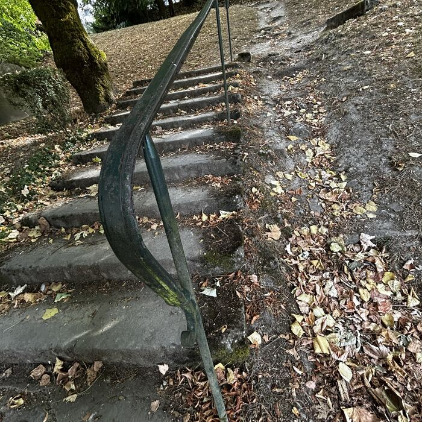
Le rythme est le plus souvent d’une séance de 45 minutes par semaine. Il s’adapte à vos possibilités et à vos disponibilités.
L’approche psychanalytique consiste à aller à l’intérieur de soi. Vous parcourez votre histoire personnelle, accompagné par le thérapeute. Le but est de vous découvrir comme un sujet unique. Je vous accompagne avec bienveillance et à votre rythme dans le travail d’élaboration et de prise de conscience.
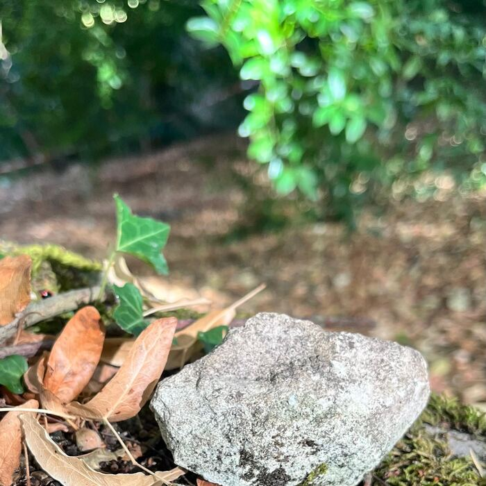
Je conserve toujours une écoute analytique. Quand cela s’avère utile, et avec votre accord, la thérapie peut intégrer une médiation par les arts plastiques : dessin, collage, argile.
Ce que l’approche psychodynamique ajoute
Ma pratique tient compte des dynamiques de l’inconscient propres à la psychanalyse. Elle met aussi l’accent sur la dynamique intrapsychique : l’exploration des affects, des désirs, des rêves et des fantasmes.
Je vous aide à décrire vos émotions et vos sentiments, y compris quand ils sont contradictoires.
J’accorde également mon attention aux résistances. Ce sont les efforts que l’on fait pour éviter certains sujets, ou les activités qui retardent le progrès de la thérapie. Ensemble, nous explorons ces évitements. Nous identifions les expériences qui sont à l’origine du vécu pénible.

- J’interroge les relations, les liens.
- Je vous aide à comprendre comment vos relations vous ont façonné, afin d’y remettre de la clarté et de l’équilibre, en pleine conscience.
En tant que psychanalyste, j’explore aussi ce qui se joue dans la relation thérapeutique elle-même : les transferts.
Je vous accompagne à reconnaître les schémas récurrents, douloureux ou autodestructeurs, jusqu’alors inconscients. Pour les comprendre, la thérapie explore les expériences passées qui les ont installés. Vous devenez peu à peu capable de vous en libérer, en toute autonomie.
L’objectif du soin est d’éprouver l’expérience correctrice que propose la psychothérapie, et de vous libérer des entraves liées au passé.
Enfants & adolescents — spécialisation certifiée
Certification « Spécialisation Enfants et Adolescents »
La prise en charge se fait dans un espace protégé et sécurisé. Elle est d’inspiration psychanalytique et d’orientation psychodynamique.
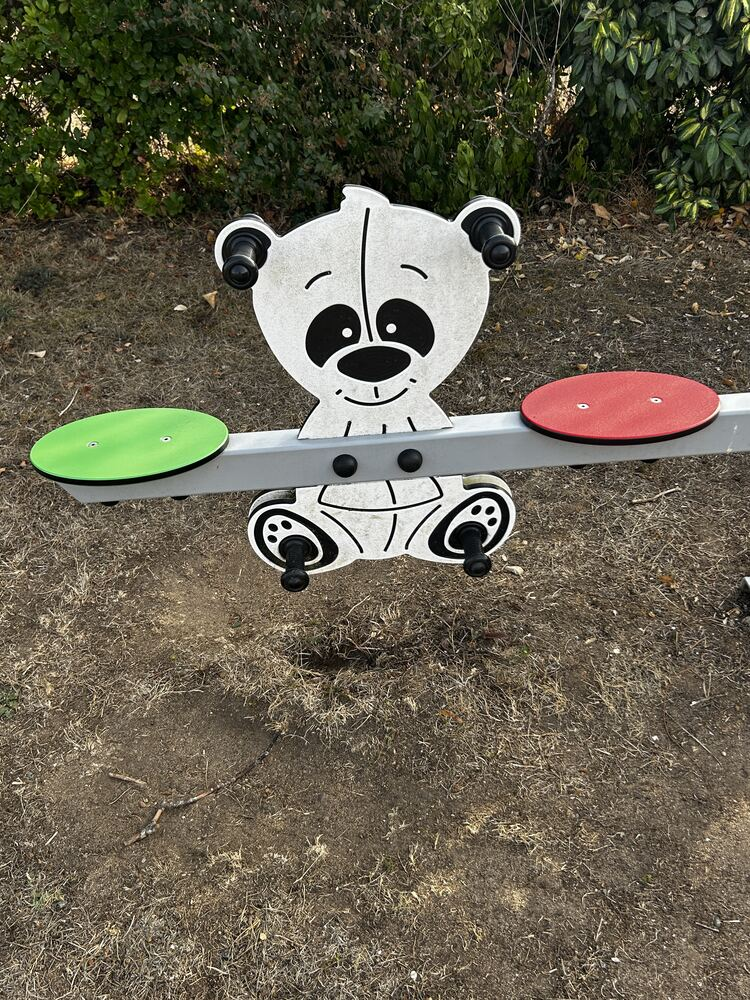
Elle nécessite deux accords : celui de l’enfant ou de l’adolescent, et celui du ou des titulaires de l’autorité parentale.
Toutes les séances se terminent par un échange avec le ou les adultes responsables. Cet échange se fait sous couvert de l’accord de l’enfant sur ce qui peut être communiqué.
L’approche est moins factuelle qu’avec un adulte. Elle s’accompagne souvent d’une médiation par le jeu ou par les arts plastiques.
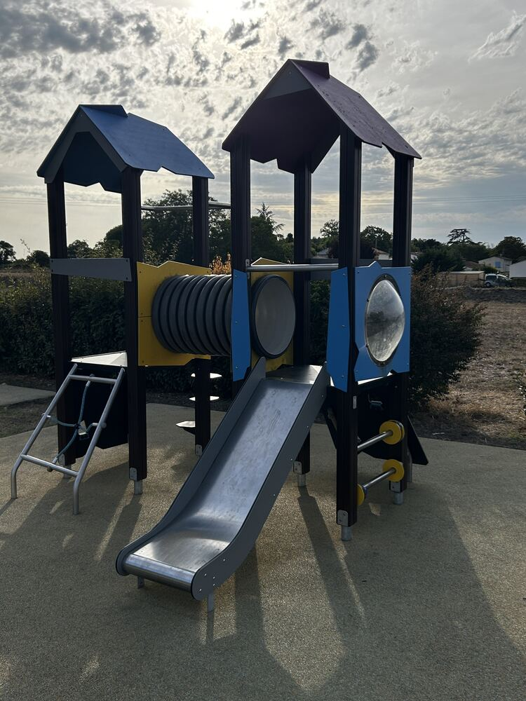
Chez les enfants comme chez les adolescents, la prise en charge est généralement plus brève. Après un certain temps les séances s’espacent.
Les indications d’une approche psychodynamique ou art-thérapeutique chez les enfants et adolescents sont : les conflits entre les générations, les addictions, le harcèlement, les difficultés identitaires, le repli sur soi.
Thérapie de couple
Je ne prends jamais parti. Je ne vous pousserai ni à rester ensemble, ni à vous séparer.
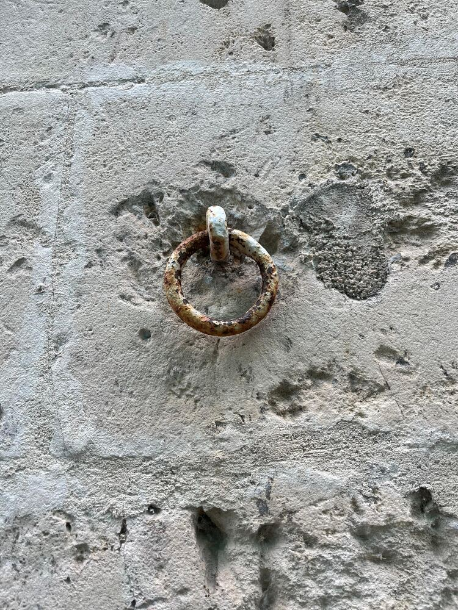
Dans quelles situations
- Difficultés de communication ou de relation
- Baisse de désir
- Relation extraconjugale
- Désir d’enfant, naissance
- Interruption de grossesse
- Maladie, deuil, chômage
- Processus de séparation
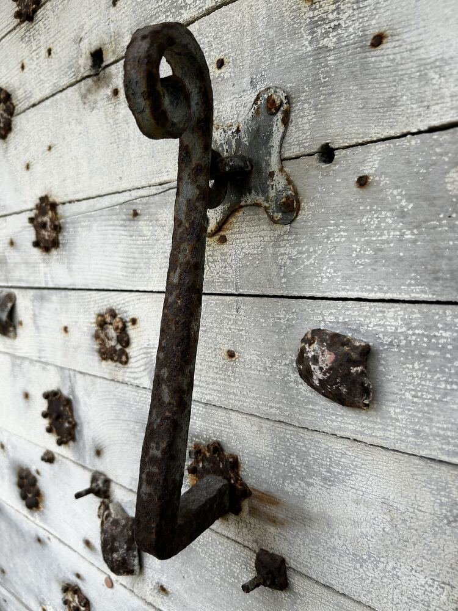
Comment je travaille
Je vérifie d’abord que les deux membres du couple sont alignés avec la démarche, et qu’aucun des deux ne souffre de cette décision.
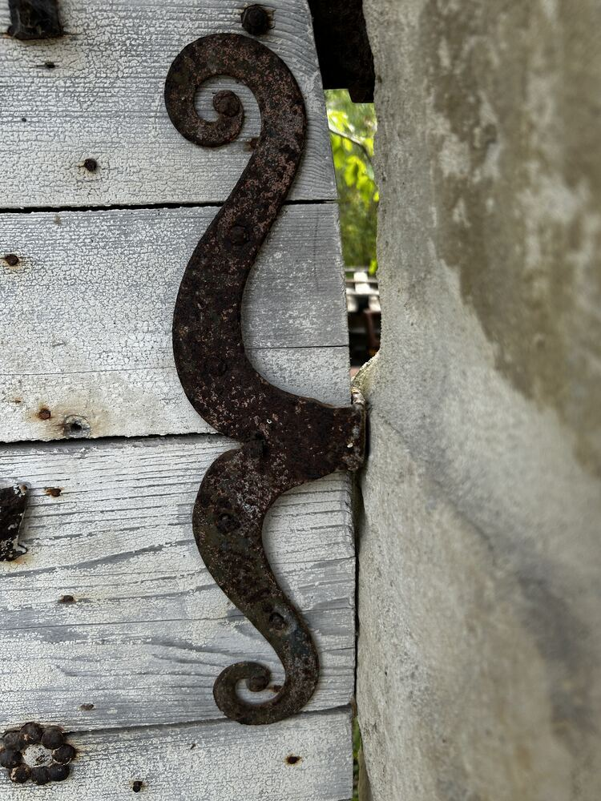
J’ai été formé pour accompagner la réflexion de ceux — enfants, adolescents ou adultes — qui souffrent dans leur vie affective, relationnelle et sexuelle.
Je suis là pour « tenir conseil » avec vous. Je vous aide à prendre du recul et à réfléchir, afin que vous fassiez vous-mêmes des choix libres et assumés.
Je suis convaincu que chaque personne du couple possède ses propres ressources pour prendre les bonnes décisions. Parfois, le couple ne les trouve plus. Je vous aide alors à les identifier et à les mobiliser de nouveau.
Cela commence par une oreille attentive, sans jugement ni interprétation hâtive. Une règle : je ne prends pas parti. Mon écoute active me permet de reformuler vos propos, de les approfondir et d’éclaircir vos problématiques entre vous.
La thérapie est comme un coup de projecteur sur la vie de votre couple. C’est mon pas de côté, ma place de spectateur attentif, qui me permet de regarder la difficulté et de vous la soumettre — avec l’intention que la solution naisse de vous et vous paraisse évidente.
Je rétablis le dialogue entre vous et je fais circuler la parole, notamment quand la communication est rompue.
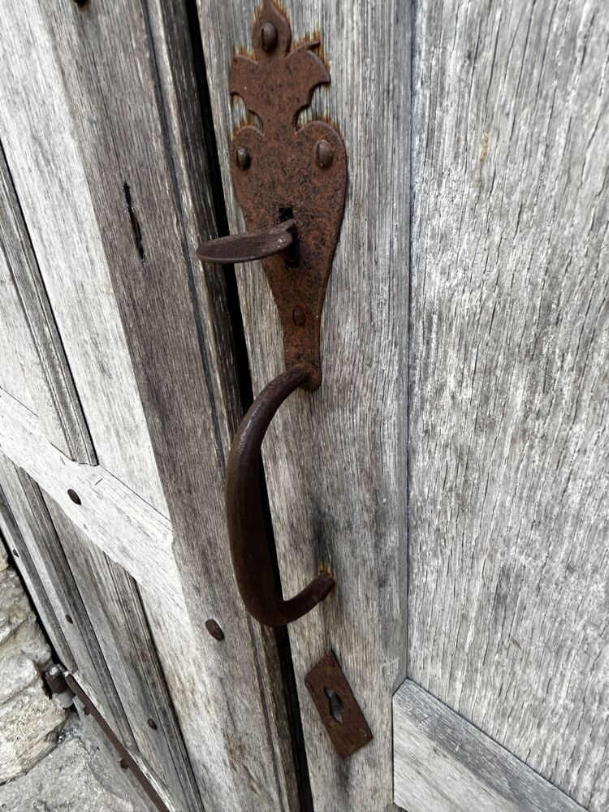
Je pose toutes les questions, y compris celles que vous n’osez peut-être plus poser.
Je n’inciterai jamais un couple à poursuivre son histoire, ni à se séparer. Mon objectif est de vous accompagner suffisamment bien pour que vous puissiez prendre votre décision le plus sereinement possible, alignés chacun dans votre esprit et votre corps.
Médiation par l’art — art-thérapie
Je suis certifié art-thérapeute. Chez les enfants comme chez les adultes, il est parfois utile d’aborder certains conflits par un autre chemin que la parole. On utilise alors des médiums : le modelage de l’argile, le dessin, le collage.
Dans l’action créative, soutenue par son côté ludique, l’expression dépasse la conscience. Les barrières qui empêchent de dire sa souffrance s’abaissent.
L’approche est toujours bienveillante. Il n’y a aucun prérequis technique, ni aucune capacité esthétique à avoir. Seules l’intention et l’action sont les moteurs de l’art-thérapie.
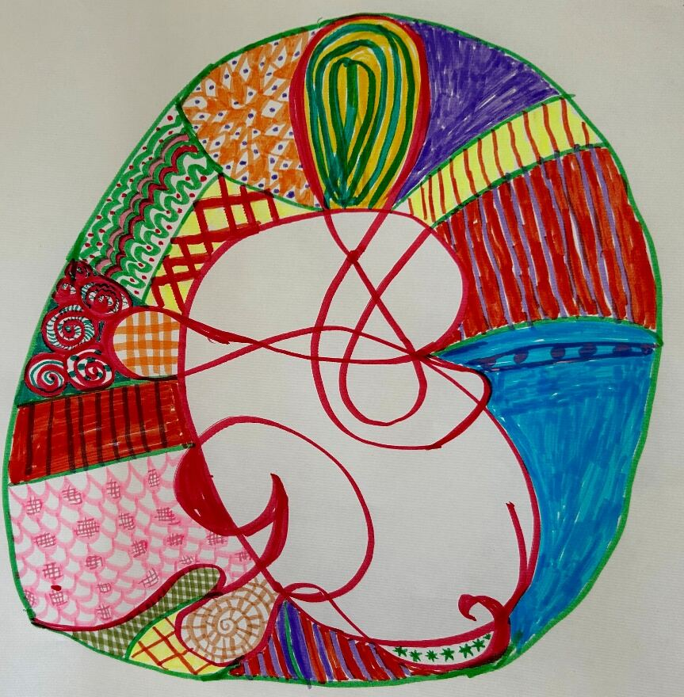
Comment je définis l’art-thérapie
C’est une autre voie pour l’expression des souffrances humaines.
- L’acte créatif — la thérapie par le faire — permet de refaire éclore l’« en vie ».
- Le processus passe par la mobilisation du corps, autre moyen d’expression. Il convoque l’aspect ludique de l’action.
- Trois processus entrent en jeu : l’intention, l’action, la production.
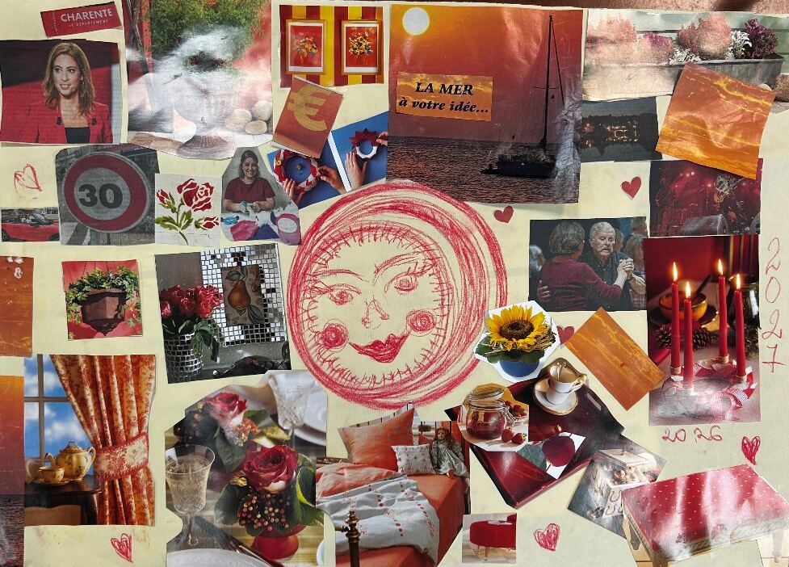
Et si l’on est très inhibé ?
- Je crée un cadre sécurisant et non jugeant. Je n’interprète jamais une œuvre de manière hâtive.
- Par le jeu, l’acte de création sollicite les notions de beau, de bien et de bon.
- Pour certaines personnes, le groupe crée aussi une émulation.
Pourquoi l’argile, par exemple
- Elle offre une capacité d’expression facile et quasiment infinie.
- Sa malléabilité apporte du plaisir et de la sensualité.
- Elle permet de poser son empreinte et d’accéder à un ancrage corporel.
- Elle permet de projeter et de symboliser ses angoisses et ses douleurs.
- Transformer une forme illustre le changement.
- Réparer une pièce cassée permet de travailler la résilience.
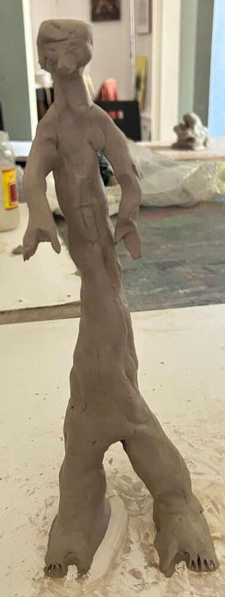
Comment j’évalue les progrès
- Je privilégie le processus créatif plutôt que le résultat.
- À partir d’une consigne, j’observe l’intention, l’action et la production.
- J’évalue le rapport à la production et la mise en mots.
- Je regarde l’implication dans l’atelier et le plaisir observé.
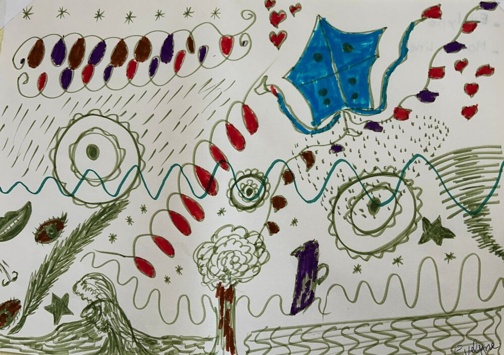
Quelques travaux d’atelier
Dessin, pastel, collage, modelage. Ce qui compte n’est pas le résultat, mais ce que le geste a permis de dire.
-
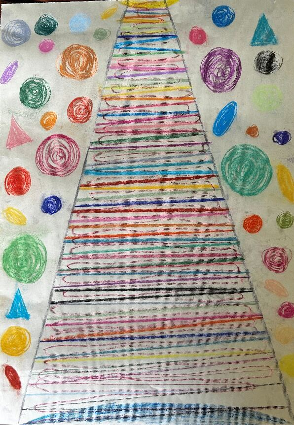
-
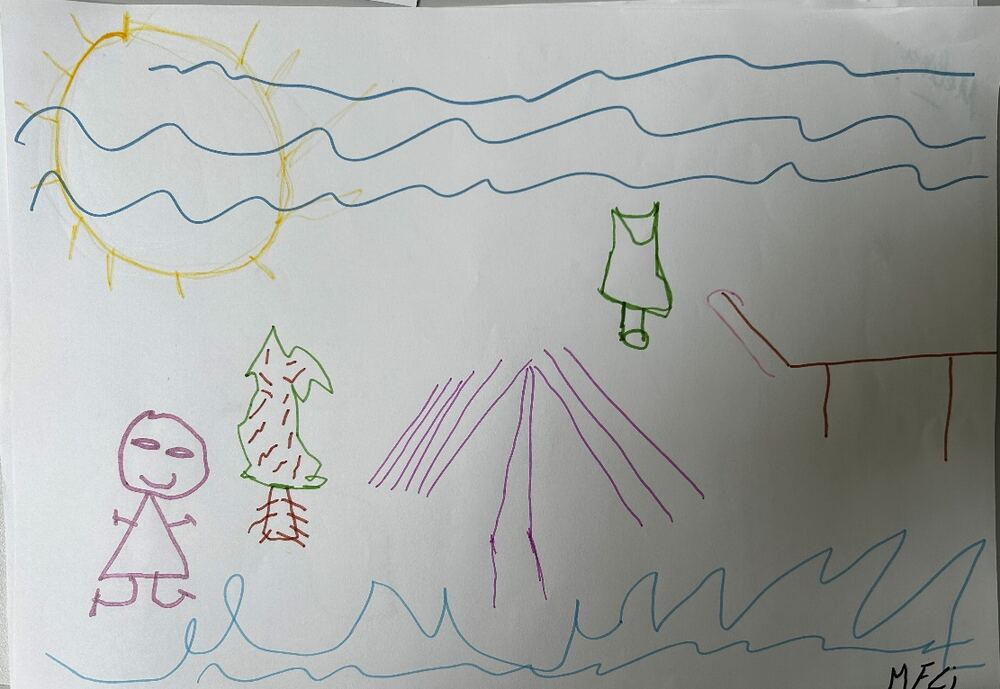
-
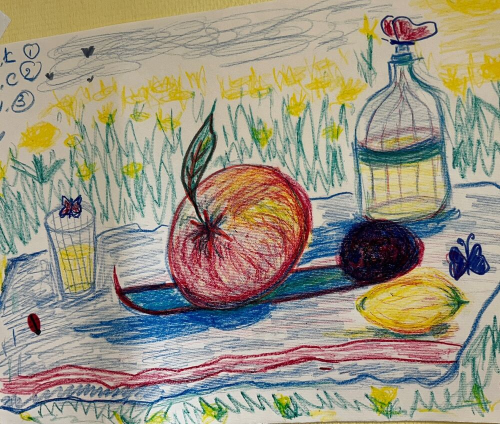
-
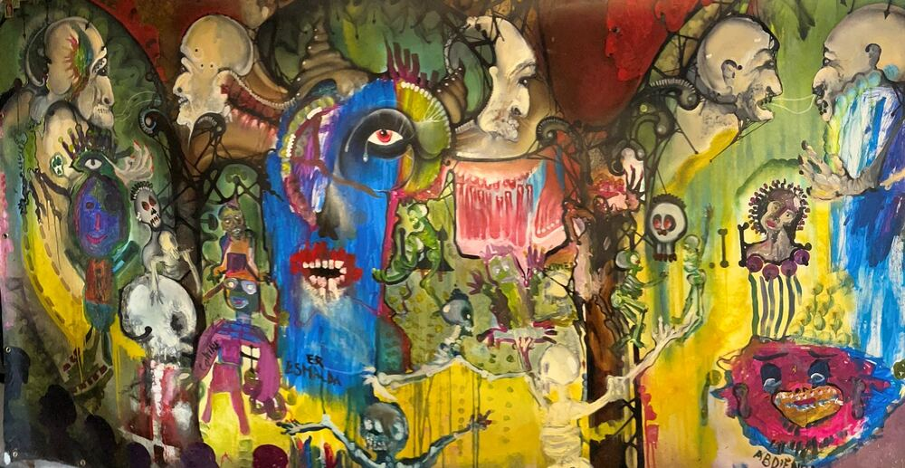
Travaux réalisés en atelier, libres de droits pour ce site.
La psychanalyse amène à des transformations profondes et durables.
Vous souhaitez en parler ?
Une première prise de contact permet de préciser votre demande, vos attentes et l’approche qui pourrait vous convenir. Écrivez-moi simplement quelques mots. Je vous répondrai dans les meilleurs délais.
- Téléphone
- 06 20 20 73 91
- psy.mbourjac@gmail.com
- Cabinet
- 11 rue de Chez Douteau, 17600 Corme-Écluse
- Réponse
- Sous 48 heures